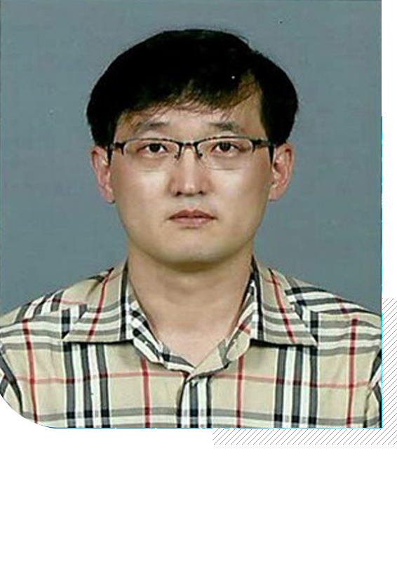
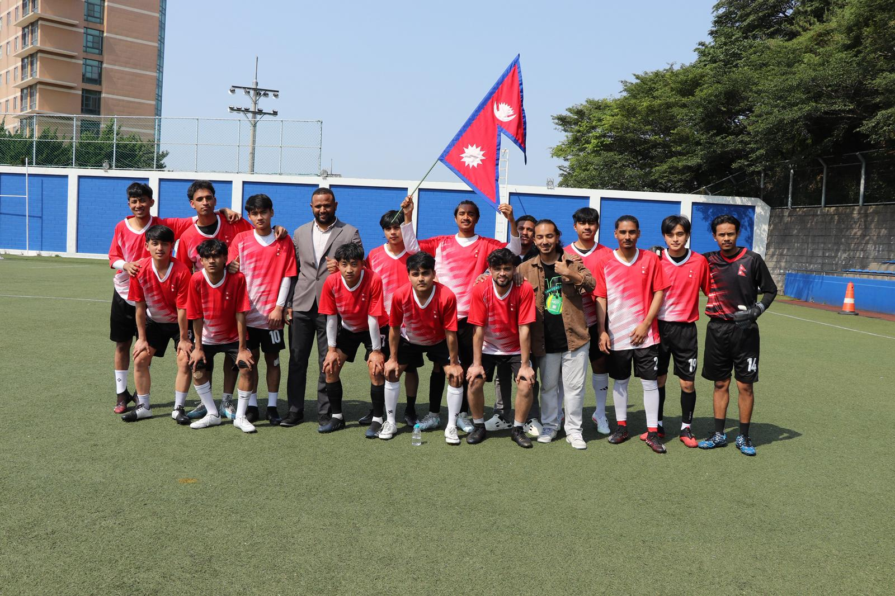
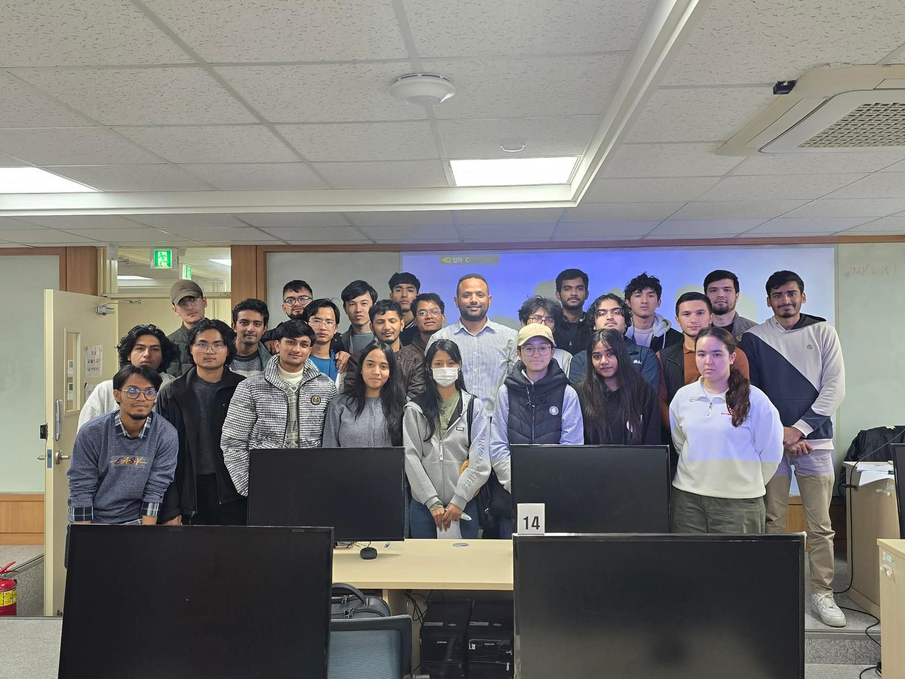

Strong foundations
Build confidence in programming, algorithms, software engineering and computer systems.
Study intelligent computing in a global environment where software, artificial intelligence and real-world problem solving come together.

Originally established for international students in 2024, the department evolved into the Department of Intelligence Computing in 2025. We combine strong computing fundamentals with practical projects and emerging technology.
Build confidence in programming, algorithms, software engineering and computer systems.
Explore AI, machine learning, data science, cloud computing and modern digital technologies.
Learn alongside an international community and prepare for technology careers around the world.
Faculty members guide students through computing theory, hands-on development and emerging technology.

Artificial Intelligence · Machine Learning
Web Development · Mobile Applications
Data Science · Big Data Analytics
Software Engineering · Cloud Computing
A progressive curriculum designed to move from core programming skills into advanced computing topics.
Projects, cultural exchange, field trips and activities create a richer university experience.




Connect with the Department of Intelligence Computing at Dong-Eui University.